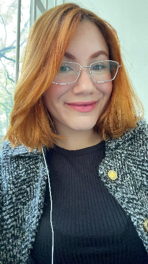

Carolina Copeli
Curso: Física - Bacharelado (Instituto de Física da USP)
Ingresso: 07/03/2025
Contato: copeli@usp.br
Minha História
Eu nasci no interior de São Paulo, na cidade de Olímpia. E, desde muito pequena, existia dentro de mim uma vontade que eu não sabia explicar muito bem: eu queria ser cientista. Quando eu tinha sete anos, alguém me perguntou o que eu queria ser quando crescesse. Sem pensar muito, eu respondi: “Quero ser cientista para estudar as estrelas.” Até hoje eu não sei exatamente de onde aquela resposta veio. Eu não sabia o que era ser cientista, não conhecia a universidade, não sabia o que significava fazer pesquisa e muito menos fazia ideia de tudo o que existia por trás daquelas pequenas luzes que eu via no céu. Eu só achava as estrelas muito bonitas. Mas, olhando para trás, gosto de pensar que aquela resposta veio de algum lugar muito profundo dentro de mim. Veio da minha alma, do meu coração.
Talvez aquele tenha sido o primeiro sinal de um caminho que eu levaria muitos anos para compreender. Desde então, sempre tive uma relação muito especial com as ciências exatas. Ainda no Ensino Fundamental I, eu descobri que tinha muita facilidade com matemática. Quando conheci a tabuada, aquilo se tornou quase uma brincadeira para mim. Eu gostava de resolver contas, encontrar padrões, descobrir respostas. Havia alguma coisa naquela lógica que me fascinava. A matemática foi crescendo comigo.
No quinto ano, aconteceu outro daqueles pequenos momentos que, na época, pareciam apenas curiosidades de criança, mas que hoje consigo enxergar como partes da minha história. Em um livro didático de Ciências, vi pela primeira vez uma fotografia da Terra inteira vista do espaço. Eu achei aquilo maravilhoso. Era o nosso planeta inteiro, pequeno e azul, visto de uma perspectiva que eu nunca tinha imaginado. Aquela imagem despertou em mim uma curiosidade sobre planetas e sobre o Universo. Eu ainda não entendia muito bem o que estava vendo, mas queria entender. No sexto ano, tive contato com um professor de Matemática que também lecionava Física para o Ensino Médio. Um dia, ele levou para a escola um livro sobre Física, mais especificamente sobre eletromagnetismo. Eu fiquei fascinada.
Não era apenas o conteúdo. Era a maneira como ele falava sobre Física, como aqueles conceitos aparentemente abstratos conseguiam explicar fenômenos que faziam parte do mundo ao meu redor. Aquilo despertou em mim uma vontade enorme de saber mais. Então comecei a procurar na biblioteca da escola livros que falassem sobre Física. Foi ali que encontrei um livro que mudou alguma coisa dentro de mim. Entre tantos livros na estante, havia um que chamou a minha atenção. Ele era bonito, tinha letras douradas e parecia quase estar brilhando. O título dizia: “Dos Homens que Mudaram a Humanidade: Albert Einstein.”
Foi a primeira biografia que li. E eu me apaixonei pela história de Einstein. Mais do que pelos feitos científicos em si, fiquei fascinada pela curiosidade dele. Pela maneira como ele questionava aquilo que parecia óbvio. Pela capacidade de olhar para o mundo e perguntar: “Mas por que as coisas são assim?” Eu comecei a enxergar a ciência de uma maneira diferente. Passei a assistir a documentários sobre Física, Cosmologia, o Universo, planetas, Relatividade e tantos outros assuntos que eu ainda mal conseguia compreender. Quanto mais eu aprendia, mais perguntas apareciam. E, quanto mais perguntas apareciam, mais eu queria aprender. Aquela criança que havia dito, aos sete anos, que queria ser cientista para estudar as estrelas começava, pouco a pouco, a descobrir o que realmente significava querer entender o Universo. E, pela primeira vez, eu tinha uma certeza. Eu queria ser física.
Mas querer alguma coisa e conseguir chegar até ela nem sempre são a mesma coisa. Minha vida foi marcada por muitos desafios. Aos 12 anos, comecei a trabalhar informalmente. Um dos meus primeiros trabalhos foi vendendo sonhos — literalmente, sonhos doces — pelas ruas. Ao longo dos anos, tive outros trabalhos e precisei lidar muito cedo com responsabilidades que fizeram com que alguns dos meus sonhos parecessem distantes demais. Durante um período da minha vida, a ideia de entrar em uma universidade acabou sendo colocada em uma espécie de gaveta. Eu ainda tinha aquele sonho, mas as circunstâncias pareciam dizer que talvez ele não fosse para mim. E eu deixei o tempo passar. Até que chegou um momento particularmente difícil da minha vida. Um momento de muita dor, sofrimento e incerteza. Eu estava desistindo de muitas coisas e, justamente quando parecia que eu estava abandonando meus próprios sonhos, tomei uma decisão. Eu iria tentar. Eu me inscrevi na FUVEST. Aquela foi a primeira prova de vestibular que fiz na minha vida. Eu nunca havia prestado outro vestibular antes. Não tinha uma trajetória construída em torno daquele objetivo. Eu simplesmente decidi tentar. E passei. Passei para Física na Universidade de São Paulo.
De alguma forma, aquela criança que aos sete anos queria estudar as estrelas finalmente estava dando o primeiro passo em direção àquele sonho. Mas entrar na universidade foi apenas o começo. Minha chegada à graduação também foi cheia de dificuldades. Eu cheguei atrasada ao início das aulas porque ainda não havia conseguido uma vaga na moradia estudantil. Precisei correr atrás de tudo enquanto tentava acompanhar uma graduação que já começava em um ritmo completamente diferente de tudo o que eu havia vivido antes. Precisei me adaptar rapidamente ao Cálculo I, lidar com as exigências de uma universidade pública, aprender a estudar de uma maneira completamente nova e, ao mesmo tempo, passar por todo o processo necessário para conseguir uma vaga na moradia estudantil. Foram muitos desafios acontecendo ao mesmo tempo. Mas, no final, deu certo. Consegui atravessar o primeiro semestre. E aconteceu uma coisa que, para mim, talvez seja a mais importante de todas: meu amor pela Física aumentou.
A Física que eu conhecia através dos livros, dos documentários e das histórias de cientistas agora estava diante de mim. Eu finalmente podia estudar as ferramentas matemáticas que descrevem a natureza, entender de onde vinham aquelas equações que antes pareciam tão distantes e começar a construir, pouco a pouco, o conhecimento necessário para fazer ciência.
Minha jornada na física teve início em março de 2025, quando ingressei no bacharelado em Física no Instituto de Física da Universidade de São Paulo (IFUSP). Desde os primeiros semestres, busquei unir a base rigorosa em matemática e mecânica com uma forte inclinação para a computação e a pesquisa de altas energias.
Em dezembro de 2025, dei um passo importante ao iniciar minha Iniciação Científica (IC), voltando meus estudos para a fascinante área dos hádrons exóticos e da física de partículas. Ao longo desse percurso, também estive envolvida com atividades de extensão — como o projeto Astrominas e visitas técnicas ao acelerador de partículas do Laboratório Pelletron —, além de atuar na monitoria de disciplinas fundamentais como Física do Calor.
Linha do Tempo Acadêmica
Início da Graduação
Ingresso no bacharelado em Física - Bacharelado no Instituto de Física da USP.
Início da Iniciação Científica (IC)
Início das pesquisas voltadas a hádrons exóticos e física de partículas.
Atividades Acadêmicas e Extensão
- Monitoria: Atuei como monitora da disciplina de Física do Calor (1º Semestre de 2026).
- Extensão: Participação no projeto Astrominas - Apropriação do Universo Científico por Alunas da Educação Básica e tour ao Acelerador de Partículas do Laboratório Pelletron.
- Desenvolvimento: Conclusão do módulo 1 do Aspire Leaders Program e participação na Semana da Física da USP.
Contato / Aulas Particulares
Interessado em aulas particulares de Física e Matemática ou colaborações acadêmicas? Envie uma mensagem: